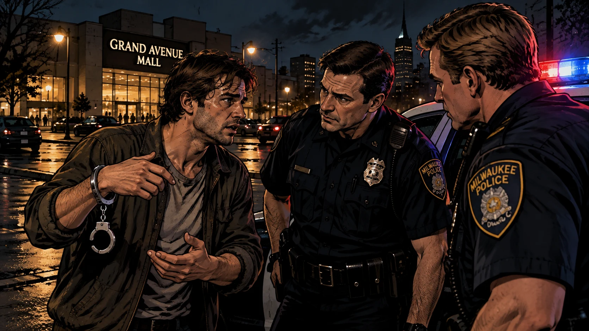

Jeffrey Dahmer: o caso de Milwaukee (Estados Unidos, 1978–1991)
22 de julho de 1991
Na noite de 22 de julho de 1991, uma viatura da polícia de Milwaukee foi parada por um homem de 32 anos com uma algema pendurada em um dos pulsos. Chamava-se Tracy Edwards. Os policiais Robert Rauth e Rolf Mueller ouviram dele que alguém o havia ameaçado com uma faca num apartamento próximo.

Edwards contou que conhecera o homem naquela noite, perto do shopping Grand Avenue, e que ele o convidara para beber cerveja e posar para fotografias. Já no apartamento, o homem conseguiu prender a algema em apenas um dos pulsos. Edwards afirmou que ficou várias horas negociando antes de conseguir fugir. Os relatos divergem na duração: quatro horas em algumas fontes, cerca de cinco em outras.
Os policiais voltaram com ele ao apartamento 213 do edifício Oxford, na North 25th Street. O morador, Jeffrey Dahmer, de 31 anos, explicou que tudo era um mal-entendido. Segundo o relato do History Channel, os policiais quase acreditaram. Então viram fotografias Polaroid de corpos desmembrados, e Dahmer foi preso.
O que a polícia encontrou nas horas seguintes mudou o caso, e os dias seguintes revelaram algo que mudou a história da polícia de Milwaukee: dois meses antes, ao menos três policiais haviam estado naquele mesmo apartamento.
---
Quem era Jeffrey Dahmer
Infância
Jeffrey Lionel Dahmer nasceu em 21 de maio de 1960, em Milwaukee, Wisconsin, filho de Lionel Herbert Dahmer, estudante de química, e Annette Joyce Flint. O casal se casara em 22 de agosto de 1959. Lionel descreveu em seu livro A Father's Story (1994) um casamento marcado desde o início pela saúde mental frágil de Joyce e por seu comportamento instável. Lionel chegou a questionar, anos depois, se os medicamentos prescritos que Joyce usava naquele período teriam tido influência sobre o filho; ela passou por crises durante a gestação do segundo filho.
Segundo as fontes, Jeffrey era uma criança descrita como enérgica e feliz. Por volta dos quatro anos, passou por uma cirurgia de hérnia dupla e, a partir daí, tornou-se mais quieto e retraído. O irmão, David, nasceu em 18 de dezembro de 1966. A família se mudou várias vezes: Lionel concluiu o doutorado em química na Iowa State University e foi trabalhar como químico analítico em Akron, Ohio. Em 1966 moraram em Doylestown, depois em Barberton e, em 1968, na casa de West Bath Road, 4480, em Bath Township, uma propriedade arborizada com cerca de 1,7 acre.
Desde cedo, Jeffrey demonstrou interesse por animais mortos e seus ossos. Colegas e familiares relataram que ele recolhia carcaças, usava um kit de química para experimentar com elas e preservava ossadas em frascos. Um amigo disse que ele queria entender como as partes "se encaixavam". Em um episódio contado em várias fontes, a carcaça de um cachorro foi pregada em uma árvore no bosque atrás da casa. A fonte dessas histórias é, em grande parte, o próprio Dahmer, o pai e conhecidos de infância.
Lionel passava muito tempo ausente por causa do trabalho e dos estudos. A depressão e as doenças atribuídas a Joyce eram parte da rotina da casa. Um professor lembrou, anos depois, sinais de abandono na criança. As brigas dos pais eram frequentes.
Adolescência
Na adolescência, Dahmer bebia cada vez mais. Tinha poucos amigos. O cartunista John "Derf" Backderf, colega de escola, o retratou depois na graphic novel My Friend Dahmer, adaptada para o cinema em 2017. Dahmer relatou depois que, aos 14 anos, havia percebido sua homossexualidade e que tinha fantasias sexuais nessa época.
Em 1978, Joyce e David deixaram a casa e foram para Wisconsin, e Lionel mudou-se para um motel a cerca de dezesseis quilômetros. A fonte consultada aponta que Jeffrey ficou sozinho na casa, sem comida adequada e com a geladeira quebrada. O divórcio dos pais foi concluído nesse ano. Ele se formou na Revere High School, em Richfield.
---
O primeiro crime: Steven Hicks (18 de junho de 1978)
Pouco depois da formatura, em 18 de junho de 1978, Dahmer deu carona a Steven Mark Hicks, 18 anos, de Coventry Township, que voltava a pé de um show de rock. Hicks havia nascido em 22 de junho de 1959, em Cuyahoga Falls, filho de Richard e Martha Hicks, e se formara na Coventry High School naquele mesmo ano.
Segundo a versão que Dahmer deu aos investigadores e à imprensa, ele levou Hicks para a casa da família com a promessa de cerveja. Os dois beberam e conversaram por algumas horas. Quando Hicks disse que ia embora, Dahmer o golpeou duas vezes na cabeça com um haltere de cerca de vinte centímetros e o estrangulou. Em suas declarações, ele disse que pretendia ter relações sexuais com Hicks e que o assassinato não foi planejado.
Dahmer afirmou ter desmembrado o corpo no espaço sob a casa (o "crawl space") e enterrado os restos no quintal. Semanas depois, desenterrou-os, dissolveu o tecido mole com produtos químicos e quebrou os ossos com uma marreta, espalhando os fragmentos na mata atrás da casa. Em 30 de julho de 1991, equipes da polícia de Bath Township encontraram fragmentos de ossos no local indicado. A identificação de Hicks, segundo um dos relatos consultados, teria sido feita por comparação dentária.
Dahmer também contou que, uma semana depois, foi parado por policiais enquanto dirigia com sacos de lixo contendo restos humanos no banco de trás e não foi autuado. Esse episódio vem da versão de Dahmer; alguns comentaristas independentes contestam detalhes do caso Hicks, mas não encontrei documentação oficial que os desminta.
O assassinato permaneceu desconhecido por 13 anos.
---
Os anos entre os crimes (1978–1987)
Dahmer ingressou na Ohio State University no outono de 1978, mas abandonou os estudos depois de um trimestre. O pai, recém-casado novamente com Shari Jordan, insistiu que ele se alistasse no Exército. Ele foi enviado a Baumholder, na Alemanha Ocidental, como médico de combate, e foi dispensado em março de 1981 por problemas relacionados ao álcool.
Passou um período em Miami Beach e retornou a Ohio em setembro de 1981. Em 7 de outubro de 1981, foi preso por perturbação da ordem e resistência à prisão no Ramada Inn de Bath. No fim de 1981 ou em 1982 (as fontes divergem), mudou-se para a casa da avó paterna, Catherine Dahmer, em West Allis, Wisconsin. Reportagens registram prisões por condutas indecentes em público, uma delas em 1982 e outra em 1986, com multa e pena suspensa.
Os investigadores ouviram depois que, nesses nove anos, Dahmer afirmou que o desejo continuava presente e que faltavam apenas as circunstâncias. Na casa da avó, ele guardou um revólver .357 e usou-o em tiro ao alvo. Ela relatou cheiros vindos do porão, onde ele tentara dissolver um esquilo em ácido.
---
Os assassinatos de 1987 a 1991
Todos os detalhes abaixo vêm, em sua maior parte, da confissão de Dahmer em julho de 1991, que foi corroborada em parte por restos humanos, fotografias Polaroid e a identificação das vítimas. Para vários casos, não existe outra fonte sobre o que ocorreu antes da morte.
Método recorrente. Dahmer conhecia as vítimas em bares, shoppings, pontos de ônibus e ruas, e as convidava para sua casa com dinheiro, bebida ou a promessa de fotografias. Misturava soníferos às bebidas. Quase todas foram estranguladas. Depois ele fotografava os corpos, e em muitos casos os desmembrava. Mais tarde guardou crânios e outras partes. Em 1991, passou a perfurar o crânio de algumas vítimas ainda vivas e injetar ácido clorídrico, numa tentativa que descreveu como a de produzir um estado de passividade, "zumbi". Ele também admitiu ter praticado necrofilia e canibalismo, que descreveu como um modo de fazer as vítimas "fazerem parte" dele.
Tabela das vítimas
| # | Vítima | Idade | Data (conforme fontes consultadas) |
|---|---|---|---|
| 1 | Steven Hicks | 18 | 18 de junho de 1978 (Ohio) |
| 2 | Steven Tuomi | 25 | novembro de 1987 |
| 3 | James Doxtator | 14 | janeiro de 1988 |
| 4 | Richard Guerrero | 22 | março de 1988 |
| 5 | Anthony Sears | 24 ou 26 (as fontes divergem) | 25 de março de 1989 |
| 6 | Raymond "Ricky" Smith (também citado como Ricky Beeks) | 33 | maio de 1990 |
| 7 | Edward Smith | 27 | junho de 1990 |
| 8 | Ernest Miller | 22 | setembro de 1990 |
| 9 | David Thomas | 22 | 24 de setembro de 1990 |
| 10 | Curtis Straughter | 17 (algumas fontes dizem 18) | 18 de fevereiro de 1991 |
| 11 | Errol Lindsey | 19 | abril de 1991 |
| 12 | Anthony (Tony) Hughes | 31 | maio de 1991 |
| 13 | Konerak Sinthasomphone | 14 | 27 de maio de 1991 |
| 14 | Matt Turner | 20 | 30 de junho de 1991 |
| 15 | Jeremiah Weinberger | 23 | julho de 1991 |
| 16 | Oliver Lacy | 24 | 15 de julho de 1991 |
| 17 | Joseph Bradehoft | 25 | julho de 1991 |
As idades das vítimas variaram de 14 a 33 anos em várias fontes; algumas listas chegam a 36. Alguns nomes e datas variam entre as fontes. Recomendo conferir cada linha com um registro judicial antes de publicar.
Steven Tuomi (1987)
Segundo Dahmer, ele levou Tuomi a um quarto de hotel em Milwaukee com a intenção, que admitiu, de drogá-lo e abusar dele. Acordou na manhã seguinte e encontrou Tuomi morto, com sangue saindo da boca. Disse não se lembrar do que aconteceu na noite anterior. Comprou uma mala e colocou o corpo dentro.
Segundo as fontes consultadas, a acusação em Wisconsin envolveu 15 mortes, embora Dahmer tenha confessado 16 no estado. Não consegui confirmar em fonte primária qual das mortes confessadas ficou sem acusação.
James Doxtator (1988)
Doxtator tinha 14 anos e, segundo a mãe, Debbie Vega, havia saído de casa para escapar de um padrasto abusivo.
Richard Guerrero (1988)
Guerrero foi atraído com a oferta de 50 dólares para passar a noite na casa da avó de Dahmer.
Anthony Sears (1989)
Sears conheceu Dahmer em 25 de março de 1989 na boate La Cage. Dahmer o levou à casa da avó, onde o drogou e o estrangulou. Os restos foram identificados em julho de 1991, dois anos depois.
1988: Somsack Sinthasomphone
Em setembro de 1988, Dahmer abordou Somsack Sinthasomphone, de 13 anos, e ofereceu dinheiro em troca de fotografias nuas. Drogou o menino e o violentou em seu apartamento. Somsack escapou e contou à família, e Dahmer foi preso em 27 de setembro de 1988. Foi acusado de agressão sexual em segundo grau e de aliciamento de menor, e se declarou culpado em janeiro de 1989.
Em maio de 1989, o juiz o condenou a um ano de prisão com direito a trabalho externo e cinco anos de liberdade condicional, e determinou o registro como agressor sexual. Uma fonte afirma que ele teria passado apenas uma semana preso antes de ser solto sob fiança; outra relata uma pena inicial de oito anos, reduzida depois de ele escrever uma carta de arrependimento. Essas informações vêm de reportagens e não de documentos judiciais. Dahmer foi solto cerca de dois meses antes do fim da pena, em 1990.
O edifício Oxford (maio de 1990–julho de 1991)
Em maio de 1990, ele se mudou para o apartamento 213 do edifício Oxford, na North 25th Street, 924. Já havia cometido cinco assassinatos. Doze dos 17 assassinatos ocorreram nesse apartamento.
Vizinhos reclamaram do cheiro. A vizinha Pamela Bass contou ao New York Times, dois dias após a prisão, que dizia a ele que algo estava "fedendo de novo". Ela contou também que ele atribuía o odor a carne estragada. Em outra ocasião, afirmou que o odor vinha do freezer.
Errol Lindsey (abril de 1991)
Dahmer drogou Lindsey, de 19 anos, perfurou seu crânio e injetou ácido clorídrico. Lindsey morreu.
Tony Hughes e Konerak Sinthasomphone (maio de 1991)
Tony Hughes, de 31 anos, era surdo. Aceitou ir ao apartamento de Dahmer, foi drogado e estrangulado. O corpo ainda estava inteiro, no chão do apartamento, quando Dahmer trouxe Konerak.
Na madrugada de 26 para 27 de maio de 1991, Dahmer convidou Konerak Sinthasomphone, 14 anos, irmão mais novo de Somsack, para o apartamento. Os investigadores e a imprensa informaram que ele prometeu 100 dólares por fotografias nuas. Dahmer afirmou que não sabia que os dois eram irmãos. Drogou o menino e perfurou seu crânio com uma broca, injetando ácido.
Dahmer saiu para comprar cerveja. Ao voltar, encontrou Konerak na rua, sentado, nu, atordoado, cercado por três jovens que já haviam chamado a polícia. Dahmer tentou levá-lo de volta para o prédio. As mulheres o impediram e disseram que a polícia estava a caminho.
Os policiais John Balcerzak e Joseph Gabrish chegaram, seguidos por Richard Porubcan. Dahmer disse que o menino era seu companheiro de 19 anos, que se chamava "John Mong" (a grafia varia entre as fontes), que estava embriagado e que os dois haviam brigado. Os policiais acompanharam Dahmer e o garoto até o apartamento. O corpo de Tony Hughes, segundo documentos judiciais, estava em um cômodo adjacente e não foi visto.
Os policiais passaram cerca de dezesseis minutos na ocorrência, segundo a comissão que depois os julgou. Eles relataram que Konerak nunca lhes respondeu, o que interpretaram como concordância. As jovens que haviam acionado a polícia insistiram que o menino estava em perigo, mas foram dispensadas. Os policiais não verificaram a idade nem a identidade do garoto e, segundo fontes, não sabiam que Dahmer era um agressor sexual em liberdade condicional.
Dahmer disse ter matado Konerak pouco tempo depois que os policiais saíram, cerca de meia hora, segundo uma das reportagens. Dias depois, uma parente de uma das jovens leu no jornal que um menino estava desaparecido e telefonou outra vez para a polícia.
Junho a julho de 1991
Matt Turner, 20 anos, foi morto em 30 de junho. Jeremiah Weinberger, 23, conhecido em Chicago, morreu no início de julho. Em 15 de julho, Dahmer matou Oliver Lacy, 24, a quem conheceu na rua perto de seu apartamento e convidou para posar para fotografias. A denúncia afirmou que ele estrangulou Lacy e teve relações sexuais com o corpo. Joseph Bradehoft, 25, foi a última vítima fatal, no fim de julho.
Tracy Edwards seria o seguinte.
---
A descoberta e a investigação
A noite da prisão
Depois que Dahmer foi preso, a polícia revistou o apartamento 213. As fontes divergem na contagem exata do que foi encontrado. Um relato lista quatro cabeças cortadas na cozinha, sete crânios, dois corações, dois esqueletos inteiros, um couro cabeludo mumificado e três torsos em um tonel de 57 galões com ácido. Outro, baseado em declarações do médico-legista, fala em sete crânios, quatro cabeças, quatro esqueletos e vários órgãos. Em ambos os casos, os restos pertenciam a 11 pessoas.
Havia também fotografias Polaroid dos corpos em vários estágios e caixas de ácido clorídrico.
O interrogatório
O interrogatório de Dahmer começou em 23 de julho de 1991, conduzido principalmente pelo detetive Patrick Kennedy e depois por Dennis Murphy. Dahmer confessou 17 assassinatos, incluindo o de Hicks, em Ohio. As informações da confissão serviram para identificar vítimas, localizar restos e estabelecer uma cronologia. Em 26 de julho, detetives de Bath Township o ouviram sobre Hicks, e ele indicou onde havia espalhado os ossos.
A identificação dos corpos
O médico-legista-chefe de Milwaukee, Jeffrey Jentzen, supervisionou a identificação das 11 ossadas e corpos recuperados. Todas foram identificadas em três dias, por impressões digitais (quatro) e registros dentários (todas). Em 1991, a identificação por DNA ainda não era rotineira. Jentzen disse que a deterioração dos corpos dificultou a determinação do momento e da causa das mortes.
Os policiais de 27 de maio
Em 26 de julho, o chefe Philip Arreola suspendeu os três policiais envolvidos no caso Konerak. Em setembro de 1991, Gabrish e Balcerzak foram demitidos. Após semanas de audiência, a comissão de polícia confirmou a demissão por 4 votos a 1, em novembro de 1992, e listou 16 erros cometidos na ocorrência. Os dois haviam admitido uma violação de regulamento em outubro de 1992, esperando uma punição menor.
Um tribunal federal registrou depois que os dois receberam uma suspensão e foram reintegrados. Balcerzak presidiu a associação de policiais de Milwaukee de 2005 a 2009 e se aposentou em 2017. Porubcan foi apenas suspenso. A família Sinthasomphone processou a cidade em 1993.
Tracy Edwards depois
Em agosto de 1991, Edwards foi indiciado no Mississippi por abuso sexual de uma menina de 13 anos, em fatos de setembro de 1990, anteriores ao caso Dahmer. Em 2011, foi preso em Milwaukee, acusado da morte de um homem em uma ponte. Não integrou a ação coletiva que indenizou as famílias das vítimas.
---
Os laudos e o que se sabe sobre as mortes
Esta seção é mais curta do que o ideal, e é importante explicar por quê.
Das vítimas. Não localizei laudos de necropsia das vítimas de Dahmer em acesso público, nem transcrições de testemunhos de legistas. Como Dahmer confessou e se declarou culpado, o escritório do legista não precisou depor em julgamento, e o público nunca soube em detalhe como foi o trabalho de identificação, segundo o próprio Jentzen em entrevista à WISN. O trabalho do escritório concentrou-se mais na identificação do que na determinação da causa e da maneira da morte. Jentzen afirmou que a deterioração prejudicou a definição do momento e da causa.
O que está documentado em fontes confiáveis:
- Os restos de 11 vítimas foram recuperados no apartamento; as identificações foram confirmadas por registros dentários.
- Quase todas as mortes, segundo a confissão, foram por estrangulamento depois de sedação com soníferos.
- Em ao menos dois casos há relato documentado de perfuração craniana com injeção de ácido: Errol Lindsey e Konerak Sinthasomphone. Em ambos houve morte.
- Em pelo menos um caso, Oliver Lacy, a denúncia afirmou ato sexual com o cadáver.
- O estado de cada corpo no momento da morte, as lesões individuais, os resultados toxicológicos e o intervalo entre morte e desmembramento não constam das fontes que consultei. Não apresento esses dados porque não os verifiquei.
De Dahmer. Segundo as fontes, ele chegou ao hospital com traumatismo craniano grave e morreu cerca de uma hora depois (outra fonte diz que morreu a caminho). Os relatos mencionam duas fraturas no crânio e lesão cerebral. O corpo foi cremado. O cérebro foi preservado para um debate judicial e, em 1995, um juiz determinou que fosse cremado, segundo o Los Angeles Times.
---
O processo
A acusação e a defesa
Dahmer foi indiciado por 17 homicídios, número reduzido para 15 em Wisconsin. Em 10 de setembro de 1991, declarou-se inocente. Em 13 de janeiro de 1992, mudou para culpado, mas insano. Com isso, o processo passou a discutir apenas sua sanidade. Em Wisconsin, bastavam 10 votos de 12 jurados para o veredicto sobre a sanidade, e o ônus da prova cabia à defesa.
O julgamento começou em 30 de janeiro de 1992, no tribunal do juiz Laurence Gram. O advogado Gerald Boyle sustentou que Dahmer não era "um homem mau, mas um homem doente".
Os peritos
A defesa: os psiquiatras Fred Berlin e Judith Becker diagnosticaram necrofilia (uma parafilia) e afirmaram que ele não conseguia controlar sua conduta. Berlin disse que, se aquilo não era doença mental, não sabia o que seria. Outros peritos independentes, George Palermo e Samuel Friedman, também depuseram; Palermo concluiu que havia um transtorno de personalidade grave, com traços mistos.
A acusação: Park Dietz, Phillip Resnick e Fred Fosdel sustentaram que Dahmer não tinha doença mental que o impedisse de entender o que fazia. Dietz apontou que ele havia planejado cada crime, procurado ficar sozinho com as vítimas e evitado testemunhas. Resnick disse que não havia necrofilia primária, já que ele preferia parceiros vivos. Dietz também mencionou o uso de preservativo por receio de contrair HIV. Dietz diagnosticou transtorno de uso de substâncias, parafilia e transtorno de personalidade esquizotípica.
Diagnósticos citados em fontes secundárias incluem transtorno de personalidade borderline, esquizotípica e transtorno psicótico. Os relatos divergem sobre quem os formulou.
O veredicto e a sentença
Em 15 de fevereiro de 1992, depois de cerca de cinco horas de deliberação, o júri (10 de 12) considerou Dahmer legalmente são. Em 17 de fevereiro, o juiz Gram o condenou a 15 prisões perpétuas consecutivas, a pena máxima. Wisconsin não tem pena de morte desde 1853. Familiares das vítimas falaram a ele, um por um, no tribunal.
Dahmer disse ao juiz que assumia toda a culpa e que nunca quis liberdade. Disse também que desejava a própria morte. A defesa anunciou que não recorreria. Os totais de anos divulgados divergem: 957 anos aparece para as 15 penas de Wisconsin e 941 para as 16 penas somadas.
Ohio
Em 1º de maio de 1992, Dahmer foi levado ao tribunal de Summit County, em Akron, onde se declarou culpado do homicídio qualificado de Steven Hicks. O juiz James Williams o condenou a prisão perpétua sem possibilidade de condicional, a cumprir depois das penas de Wisconsin. O promotor Lynn Slaby disse que queria que a família Hicks pudesse se manifestar. A mãe, Martha Hicks, disse ao tribunal que o filho teria 18 anos para sempre.
A família Hicks também processou Lionel Dahmer, Joyce e Shari por negligência na criação do filho, e obteve uma sentença por homicídio culposo contra Dahmer.
---
A prisão e a morte
Dahmer cumpriu pena na Columbia Correctional Institution, em Portage, Wisconsin. No primeiro ano, ficou isolado por segurança. Em abril de 1994, o pastor Roy Ratcliff começou a visitá-lo e, segundo os relatos, o batizou como cristão; passou a vê-lo toda semana. Em julho de 1994, Dahmer foi atacado por outro preso e não ficou gravemente ferido. Ofereceram-lhe proteção reforçada, que recusou.
Na manhã de 28 de novembro de 1994, Dahmer, Christopher Scarver e Jesse Anderson foram levados para limpar o ginásio. O que se sabe do episódio vem em grande parte de Scarver e de reportagens: Scarver, 25 anos, que cumpria pena por um homicídio de 1990 (Steven Lohman), pegou uma barra de metal de cerca de cinquenta centímetros da sala de musculação e atacou Dahmer, 34 anos, num vestiário. Também atacou Anderson, 37, que morreu em 30 de novembro.
Os motivos que Scarver apresentou variam. Ele disse que Dahmer provocava os presos com membros falsos feitos de comida e ketchup, que sentiu nojo ao ler uma reportagem sobre os crimes, que foi cutucado pelas costas com um cabo de vassoura e que viu Dahmer e Anderson rindo. Em outras ocasiões, disse que Deus havia mandado. Ele alegou ainda que os guardas "tiveram algo a ver" com o fato de os três terem ficado sem supervisão. O advogado de Dahmer, Gerald Boyle, disse não acreditar na versão de Scarver. Scarver recebeu duas prisões perpétuas adicionais.
---
Depois
O edifício Oxford foi comprado pelo projeto Campus Circle por 325 mil dólares e demolido em novembro de 1992, quinze meses após a descoberta. Hoje é um terreno vazio. Um memorial chegou a ser planejado e nunca foi construído.
O cérebro e as cinzas. Joyce queria que o cérebro fosse estudado. Lionel queria cremá-lo, conforme pedido do filho. Um juiz decidiu em 1995 pela cremação. As cinzas foram divididas entre os pais.
As famílias. Uma ação coletiva concedeu cerca de 500 mil dólares às famílias das vítimas, segundo a ABC News. Lionel Dahmer publicou A Father's Story em 1994. Joyce Dahmer morreu em 2000, de câncer.
A casa de Bath. Segundo reportagens, a casa de West Bath Road continua de pé e é residência particular.
Livros e produções. Entre as obras sobre o caso: The Shrine of Jeffrey Dahmer (Brian Masters, 1993), The Jeffrey Dahmer Story (Donald Davis, 1991), Dark Journey, Deep Grace (Roy Ratcliff, 2006), o filme My Friend Dahmer (2017) e a série da Netflix de 2022, que familiares de vítimas criticaram por imprecisões e pela exposição de suas histórias.
---
O que permanece em aberto
- Quantas vítimas. Dahmer confessou 17 mortes. Em 1991, a imprensa noticiou que investigadores na Alemanha e em outros lugares examinaram se ele teria cometido crimes durante o serviço militar e a estadia na Flórida. Nenhuma dessas hipóteses foi confirmada nas fontes que consultei.
- A morte sem acusação. Uma das mortes confessadas não gerou acusação em Wisconsin. Não consegui estabelecer qual, em fonte primária.
- O que se passou com cada vítima. Para a maioria das mortes, a única narrativa é a de Dahmer, que tinha incentivo para minimizar ou distorcer. A confissão foi corroborada por restos, fotografias e identificações, mas não em todos os pormenores.
- Divergências de dados. Idades (Sears, Straughter), datas exatas, contagem de restos no apartamento, duração do encontro com Edwards, momento da morte de Dahmer (a caminho ou no hospital) e totais de pena variam entre as fontes.
---
Nota sobre as fontes
Esta reconstrução foi feita a partir de pesquisa na web, e não de acesso direto aos autos. Não consultei o processo judicial, os laudos oficiais nem os livros citados; as informações vêm de arquivos da UPI e do Washington Post, de reportagens do Los Angeles Times, New York Times e CBS News, de um tribunal federal (7º Circuito, caso Balcerzak v. City of Milwaukee), de um artigo do periódico jurídico da Universidade de Michigan sobre o julgamento e de uma matéria da WISN com o ex-legista Jentzen. Fontes de qualidade variável (sites de entretenimento, blogs e wikis) foram usadas apenas para pontos secundários e estão sinalizadas no texto quando há divergência.
Antes de publicar, recomendo conferir contra fontes primárias: as datas e idades da tabela de vítimas, a questão de quais mortes foram acusadas, os totais de pena e a descrição dos achados no apartamento. Para uma seção de autópsia completa, seria preciso obter os laudos do escritório do legista de Milwaukee por meio de solicitação de registros públicos.
Fontes consultadas
- UPI Archives: "Police officers fired in Dahmer case admit mistake" (13/10/1992), "Commission upholds firing of Dahmer cops" (27/11/1992), "Dahmer sentenced to life for Hicks murder" (1/5/1992), "Three more mass murder victims identified" (26/7/1991), "Man who led to Dahmer arrest faces sex charge" (8/8/1991)
- The Washington Post, "Dahmer is sentenced to 15 life terms" (18/2/1992)
- University of Michigan Law, Samuel Gross, "The Romance of Revenge" (artigo sobre o julgamento)
- U.S. Court of Appeals, 7th Cir., Balcerzak v. City of Milwaukee, 163 F.3d 993 (1998)
- WISN 12 News, "Years later: Jeffrey Dahmer case still provides lessons"
- PMC, "Micro Disasters: The Case of Serial Killer Jeffrey Dahmer"
- A&E: artigos sobre o julgamento e a prisão de Dahmer
- History.com: "Cannibal and serial killer Jeffrey Dahmer is caught"
- ABC News: "Jeffrey Dahmer hero charged with homicide" (2011)
- Biography.com; Encyclopedia.com; Oxygen; Newsweek; Marquette Wire; Wikipedia (verbetes sobre Dahmer, Lionel Dahmer, Jesse Anderson, Roy Ratcliff e John Balcerzak)
- Jeffrey Dahmer Memorial (cronologia); Fox 8 Cleveland, sobre os vínculos com Ohio